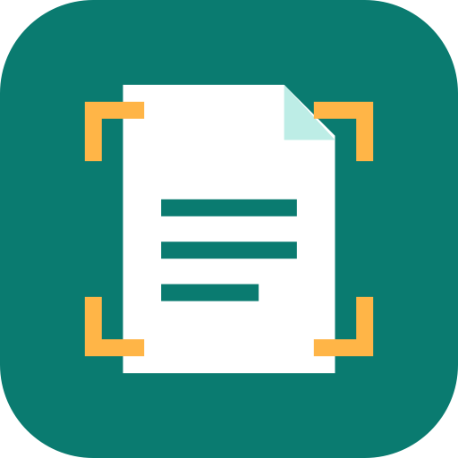
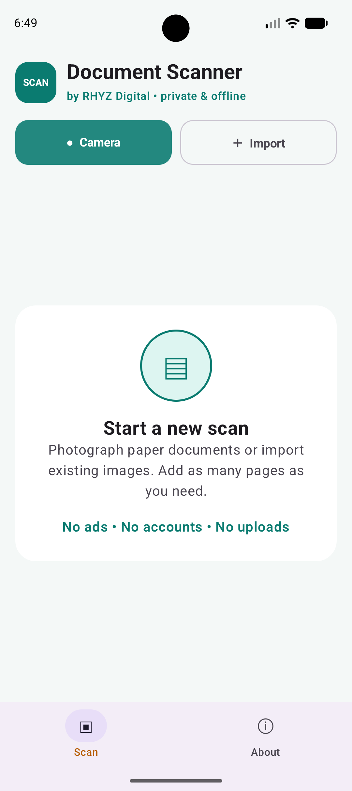

Capture or import
Take a new document photo with the camera or choose an existing image from your Android device.

An app by RHYZ Digital
Android · Version 1.0.0
Capture a document with your camera or import existing images, organize and clean up each page, then save them together as a multi-page PDF.
Completely free · No account · No ads or analytics · Documents stay on your device

Everything in one scan
Start with your camera or an image already on your phone, then prepare every page before exporting the finished document.
Take a new document photo with the camera or choose an existing image from your Android device.
Add several pages to one document and move, rotate, or remove them before saving.
Keep the original image or use color, grayscale, and black-and-white treatments for clearer documents.
Export the arranged pages as one PDF file and choose where it should be stored.
Private by design
Document Scanner processes every photo and document locally on Android. It does not require an account, upload scans to RHYZ Digital, or include advertising or analytics SDKs.
Camera photos use temporary app storage, imported images are accessed only when you select them, and exported PDFs remain wherever you choose to save them.
Direct Android download
Download the APK directly from RHYZ Digital. Android may ask you to allow installation from your browser or file manager.
Download Document Scanner APK48b3e48b7e82a5e30cbfdd2e1047ed3c6d486bed7f166c9afda8f511b40e04c6Verify this checksum after downloading to confirm the file is unchanged.
Support Document Scanner
Document Scanner is completely free. If it helps you, an optional donation supports maintenance and future improvements to our independent mobile apps.
Contact RHYZ Digital